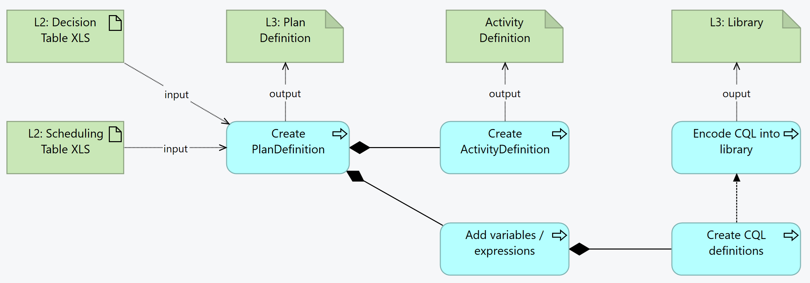

SMART Guidelines L3 SOP
1.0.0 - release

SMART Guidelines L3 SOP
1.0.0 - release

This page is part of the SMART IG STARTER KIT (v1.0.0: Release) based on FHIR (HL7® FHIR® Standard) v5.0.0. This is the current published version in its permanent home (it will always be available at this URL). For a full list of available versions, see the Directory of published versions
Decision tables represent the activities that are performed when triggered or requested - e.g .at patient visit, or when requested by the professional. Decision tables consider the input variables expressed in the L2, and the output (activities and data). Decision tables are definitional artifacts that are instantiated when executed.

condition or dynamicValue), capture the expressions in a CQL library and refer to that library in the library`The header of the PlanDefinition contains the basic metadata for identifying and describing the PlanDefinition:
Instance: IMMZD2DTMeaslesDose0
InstanceOf: http://hl7.org/fhir/uv/cpg/StructureDefinition/cpg-recommendationdefinition
Title: "IMMZ.D2.DT.Measles MCV Dose 0"
Description: "If the child or patient has not been given MCV0 between 6 and 9 months"
Usage: #definition
* library = "http://smart.who.int/immunizations-measles/Library/IMMZD2DTMeaslesDose0Logic"
* extension[+]
* url = "http://hl7.org/fhir/uv/cpg/StructureDefinition/cpg-knowledgeCapability"
* valueCode = #computable
* url = "http://smart.who.int/immunizations-measles/PlanDefinition/IMMZD2DTMeaslesDose0"
* name = "IMMZD2DTMeaslesDose0"
* status = #draft
* experimental = false
* publisher = "World Health Organization (WHO)"
* relatedArtifact[+]
* type = #citation
* citation = "WHO recommendations for routine immunization - summary tables (March 2023)"
If using FSH, the above example illustrates the header for the MCV Dose 0 PlanDefinition.
Overall, the PlanDefinition organization follows the decision table inputs and outputs:
action (Measles Routine Immunization Schedule Incomplete)
action (No MCV Doses Administered)
action (Client Age Less Than 6 Months)
action (Live Vaccine Within 4 Weeks)
action (Client Is Due For MCV0)
action (MCV Dose 0 Administered)
Each PlanDefinition will have a root action with an applicability condition that identifies the main inclusion criteria for the rule (i.e. when the rule is applicable). In this case:
* action[+]
* extension[+]
* url = "http://hl7.org/fhir/uv/cpg/StructureDefinition/cpg-rationale"
* valueMarkdown = "Note: The countries should apply the national immunization policy for MCV0 dose and adjust this logic accordingly.<br/>A supplementary dose of MCV (recorded as MCV0) should be considered for infants known to be exposed (i.e. born to an HIV-infected woman) or soon after diagnosis of HIV infection in children older than 6 months who are not receiving HAART and for whom the risk of measles is high, with the aim of providing partial protection until they are revaccinated after immune reconstitution with HAART.<br/>In the following situations, a supplementary dose of MCV should be given to infants from 6 months of age:<br/>* (1) during a measles outbreak as part of intensified service delivery;<br/>* (2) during campaigns in settings where the risk of measles among infants < 9 months of age remains high (e.g. in endemic countries experiencing regular outbreaks);<br/>* (3) for internally displaced populations and refugees, and populations in conflict zones;<br/>* (4) for individual infants at high risk of contracting measles (e.g. contacts of known measles cases or in settings with increased risk of exposure during outbreaks such as day-care facilities);<br/>* (5)for infants travelling to countries experiencing measles outbreaks;<br/>* (6) infants known to be HIV-infected or exposed (i.e. born to an HIV-infected woman).<br/>In areas where there is a high incidence of both HIV infection and measles, an initial dose of MCV may be offered as early as age 6 months (recorded as MCV0). The 2 routine doses of MCV (MCV1 and MCV2) should then be administered to these children according to the national immunization schedule.<br/>As a general rule, live vaccines should be given either simultaneously or at intervals of 4 weeks. An exception to this rule is OPV, which can be given at any time before or after measles vaccination without interference in the response to either vaccine."
* title = "Immunize patient for Measles"
* condition[+]
* kind = #applicability
* expression
* language = #text/cql-identifier
* expression = "Measles Routine Immunization Schedule Incomplete"
The root action indicates the rule is applicable when the measles routine immunization schedule is incomplete. The applicability condition references the Measles Routine Immunization Schedule Incomplete expression in the IMMZD2DTMeaslesDose0Logic library.
Because the Annotation is the same for all actions, apply the cpg-rationale extension at this level, meaning that this rationale should be displayed for any outcome produced by following the PlanDefinition.
The next level contains two actions, one for No MCV0 Dose Administered:
* action[+]
* title = "Consider MCV0 Dose"
* condition[+]
* kind = #applicability
* expression
* language = #text/cql-identifier
* expression = "No MCV0 Doses Administered"
And one for MCV0 Dose Administered:
* action[+]
* title = "MCV0 Dose Administered"
* description = "MCV0 was administered. Check measles routine immunization schedule."
* condition[+]
* kind = #applicability
* expression
* language = #text/cql-identifier
* expression = "MCV0 Dose Administered"
The MCV0 Dose Administered action has three sub-actions:
One for Client Age Less Than 6 Months:
* action[+]
* title = "Client Age Less Than 6 Months"
* description = "Should not vaccinate client for MCV0 as client is less than 6 months. Check for any vaccines due, and inform the caregiver of when to come back for MCV0."
* condition[+]
* kind = #applicability
* expression
* language = #text/cql-identifier
* expression = "Client Age Less Than 6 Months"
One for Live Vaccine Administered Within 4 Weeks:
* action[+]
* title = "Last Live Vaccine Administered Within 4 Weeks"
* description = "Should not vaccinate client for MCV0 as live vaccine was administered in the last 4 weeks. Check for any vaccines due, and inform the caregiver of when to come back for MCV0."
* condition[+]
* kind = #applicability
* expression
* language = #text/cql-identifier
* expression = "Last Live Vaccine Administered Within 4 Weeks"
And one for Client Is Due For MCV0:
* action[+]
* title = "Provide Measles Vaccine"
* description = "May vaccinate client for MCV0 as client is within appropriate age range, MCV0 was not administered and no live vaccine was administered in the last 4 weeks. Check if one of the MCV0 specific scenarios is applicable."
* condition[+]
* kind = #applicability
* expression
* language = #text/cql-identifier
* expression = "Client Is Due For MCV0"
* definitionCanonical = Canonical(IMMZD2DTMeaslesMR)
This last action references an ActivityDefinition (IMMZD2DTMeaslesMR) which defines a MedicationRequest to administer a Measles Vaccine.
Each PlanDefinition has a logic library that contains the expressions that are directly referenced from the PlanDefinition. In this case:
define "Measles Routine Immunization Schedule Incomplete":
Logic."Measles Routine Immunization Schedule Incomplete"
define "No MCV0 Doses Administered":
Logic."Number Of MCV0 Doses Administered" = 0
define "MCV0 Dose Administered":
Logic."Number Of MCV0 Doses Administered" = 1
define "Client Age Less Than 6 Months":
AgeInMonthsAt(Today) < 6
define "Client Age 9 Months Or More":
AgeInMonthsAt(Today) >= 9
define "Last Live Vaccine Administered Within 4 Weeks":
Logic."Date Last Live Vaccine Administered" + 4 weeks on or before Today
define "Client Is Due For MCV0":
"MCV0 Status" = 'Needed'
and "MCV0 Due Date" on or before Today
This library also has some supporting logic:
define "MCV0 Status":
if Logic."Number Of MCV0 Doses Administered" = 0 and AgeInMonthsAt(Today) between 6 and 9 then
'Needed'
else
'Complete'
define "MCV0 Due Date":
if "MCV0 Status" = 'Needed' then
WC.LatestOf({
Patient.birthDate + 6 months,
Logic."Date Last Live Vaccine Administered" + 4 weeks,
Today
})
else
null
And makes reference to a common Logic library that contains logic used by all the PlanDefinitions:
define "Most Recent Live Vaccine Dose":
Elements."Live vaccine dose".mostRecent()
define "Date Last Live Vaccine Administered":
date from start of "Most Recent Live Vaccine Dose".occurrence.toInterval()
define "No Live Vaccine Administered":
"Date Last Live Vaccine Administered" is null
define "Number Of MCV0 Doses Administered":
Count(Elements."MCV Dose 0 Dose")
define "Number Of Primary Series Doses Administered":
Count(Elements."MCV Primary Series Dose")
define "Measles Routine Immunization Schedule Complete":
"Number Of Primary Series Doses Administered" >= 2
define "Measles Routine Immunization Schedule Incomplete":
not "Measles Routine Immunization Schedule Complete"
define "Number Of Supplementary Doses Administered":
Count(Elements."MCV Supplementary Dose")
Which in turn makes use of the EncounterElements library.
As with all FHIR Conformance resources, change management is critical. Do not set the version element of PlanDefinitions and ActivityDefinitions defined in the SMART Guideline, the version element will be set by the publication process. See the versioning topic for more information on change management.
| Tool | Usage | Doc |
|---|---|---|
SMART Guidelines - Immunizations (Measles): PlanDefinitions SMART Guidelines - Immunizations (Measles): Activity Definitions